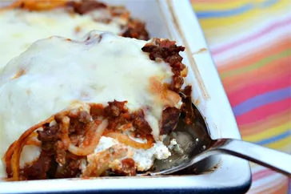

Million Dollar Spaghetti
Million dollar spaghetti is the perfect combination of noodles, lean ground beef sauce, cottage cheese, cream cheese, and sour cream. It's unbelievably good! Serve with garlic bread and salad.

Million Dollar Spaghetti Ingredients
These are the ingredients you’ll need to make this million dollar spaghetti recipe:
- Spaghetti: An 8-ounce package of spaghetti should make about eight servings.
- Beef: You’ll need a pound of lean ground beef. You can use a mix of ground beef and ground turkey, if you prefer.
- Spaghetti sauce: Use a jar of store-bought spaghetti sauce or make your own marinara sauce at home.
- Butter: Use a stick of sliced butter to prepare the pan and to add richness and flavor to the baked spaghetti.
- Cottage cheese, cream cheese, and sour cream: A mixture of cottage cheese, cream cheese, and sour cream is essential for this decadent, creamy spaghetti sauce.
- Cheese: Shredded Cheddar cheese is the perfect finishing touch for this million dollar spaghetti.